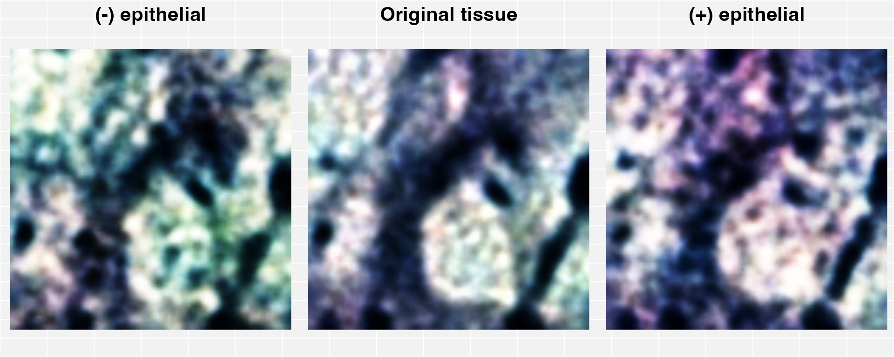
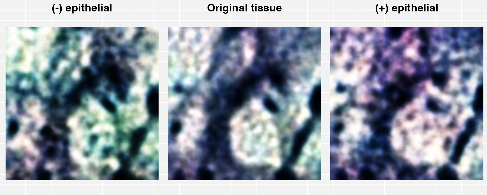
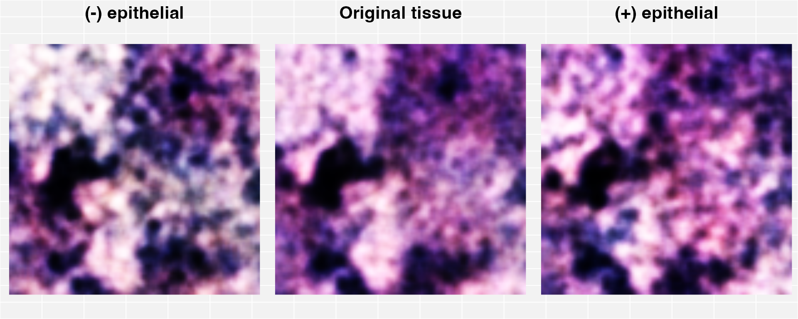
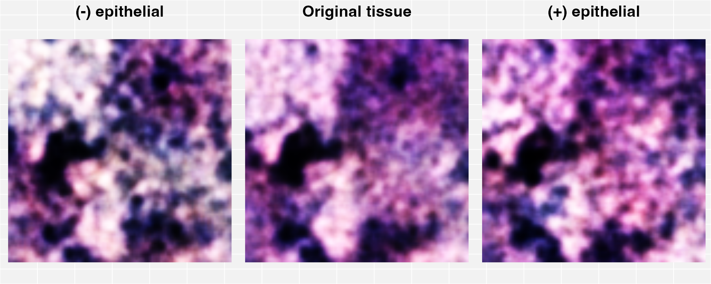

In-silico perturbations of imaging tissue
Compiled: January 27, 2022
Spatial_Transcriptomic_modalities.RmdIntroduction
Here Generative Encoders are used to transform Spatial Transcriptomics information containing both the gene matrix and image matrix into the same dimensional space. Given the latent space is now functionally aligned with “gcode”, a functional mapping can be used to transform the images into genes, followed by a perturbation, and then a transform back from genes into a perturbed image.
Set-up and run gcode
Here the data list is set up by combining the gene expression and image matrix data. This is then passed to gcode, which takes in a list of matrix datasets and finds a common latent space shared between the information in genes and images. Partial Singular Value Decomposition is used via the “irlba” package to initialise a 500 dimensional sample and feature latent space. Join sets up the model such that the sample and feature encoders are different, but the latent space is common. The configuration and join framework is passed to gcode, along with the data list.
# Compose a list of:
# Gene expression and,
# Pixel data
# Given it is a list, can be composed of more sets ...
data_list <- list(ST_breast_gex_non.tumour = as.matrix(BC_data$non_tumour$gex),
ST_breast_pixel_non.tumour = as.matrix(BC_data_pixel)
)
# Extract configure default parameters
config <- gcode::extract_config(F)
# Initialise both alpha (first element), and beta (second element) with "irlba"
config$init <- c("irlba","irlba")
# Set both the dimension of alpha (i_dim), and dimension of beta (j_dim) to 500
config$i_dim <- 500
config$j_dim <- 500
# Set the pixel and gene matrix to have:
# Different alpha parameterised functions (alpha = c(1,2))
# Different beta parameterised functions (beta = c(1,2))
# Same latent "code" space (code = c(1,1))
join <- list( alpha = c(1,2), beta = c(1,2), code = c(1,1) )
# Run gcode with:
# data_list
# config
# join
# Other input variables set to default in gcode are (not used here):
# transfer - to transfer alpha / beta / code parameters
# recover - impute or predict missing values
gcode.non_tumour <- gcode::gcode(data_list = data_list, config = config, join = join)Perturb the imaging tissue in-silico
Using the script provided in ‘perturbation.R’, several helper functions are used to make the documentation cleaner and smoother, yet still understandable and readable. The main concept is that individual images are perturbed by a factor (factor_delta; no change is given at 0.5), by a simple addition or subtraction signified by a sign (delta) when the image’s expected gene expression is inferred and assumed to be known.
Within the perturbation script, there are functions ( \(f( )\), \(h( )\) ), for a single image (\(E\)), and it’s corresponding expected gene expression (\(G\)), the relation holds using Generative Encoding:
\[ f(E) = h(G) \ \ \ \ \ \ \ \ \ \ \ \ \ (1)\] This indicates that the image \(E\) and the genes \(G\) are encoded into the same space via encoding functions that find a similar subspace which can represent both the image and genes. Given the functions find a common latent space, it is possible to scope (begin with a given model), chart (learn via coordinate descent), and map a process there and back again (akin to transforms using the feature encoders)…
Imagine a path from \(E\) to \(G\); \(E\) moves along a path to reach \(G\), and the same path can take \(G\) to \(E\). Now for example, let there be an information trading centre that converts between information formats (such as images and genes) on this path. This trading centre is the encoding space and is the relationship outlined in \((1)\).
Given it is the same path, if \(E\) moves to \(G\) via the information trading centre where knowledge is shared and converted from one format to another, it is possible for \(G\) to move to \(E\) along the same path. Using this thought process, begin with the image \(E\), and move it to \(G\) via the path. When at \(G\), the image is now in the format of genes, and thus the genes can be perturbed by a simple addition or subtraction. Now \(E\) travels back along the path through the information trading centre, carrying with it any perturbations and converts it back to an image format. This is what the R function “perturbation” does.
source("./perturbation.R")
epithelial_set <- "^WNT|^HSP|^FKBP|^AGRN|^AMBN|^AMLEX|^BMP|^BRCA|^COL|^EFE|^FBLN|^FBN|^IGF|^LTB|^MGP|^RSP|^SMOC|^TGFB|^ZP|CAN$|^VIM|^CD44|^ANXA1|^ACTA2|^ITGA8|^FN1|^VCAM1|^ITGB2|^CAV1|^LAM"
run_plotting <- lapply(c(1:4),function(image_id){
decrease_perturbed_image_histology <- perturbation(image_histology = BC_data_pixel[image_id,],
gcode_model = gcode.non_tumour,
gene_list = gene_consensus$hgnc_symbol,
perturb_gene_set = epithelial_set,
delta = "-",
factor_delta = 0.025
)
increase_perturbed_image_histology <- perturbation(image_histology = BC_data_pixel[image_id,],
gcode_model = gcode.non_tumour,
gene_list = gene_consensus$hgnc_symbol,
perturb_gene_set = epithelial_set,
delta = "+",
factor_delta = 0.025
)
no_change_perturbed_image_histology <- perturbation(image_histology = BC_data_pixel[image_id,],
gcode_model = gcode.non_tumour,
gene_list = gene_consensus$hgnc_symbol,
perturb_gene_set = epithelial_set,
delta = "+",
factor_delta = 0.5
)
to_plot <- plot_clean_ggplot2(list(decrease_perturbed_image_histology,no_change_perturbed_image_histology,increase_perturbed_image_histology))
plot(to_plot)
}) 
 
